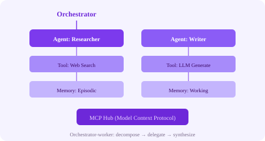

Agentic AI systems use autonomous agents that plan, reason, use tools, and collaborate to accomplish complex tasks. In 2026, agentic workflows are a core architectural pattern in production AI systems.
A central orchestrator decomposes a user request into subtasks, dispatches each to a specialized worker agent, and synthesizes the results.
# Orchestrator-Worker Flow
User: "Write a blog post about AI trends"
Orchestrator decomposes:
Task 1: Research latest AI trends → Researcher Agent
Task 2: Outline blog structure → Writer Agent
Task 3: Draft sections → Writer Agent
Task 4: Review and polish → Editor Agent
Each agent has:
- Role-specific system prompt
- Access to relevant tools (web search, DB, LLM)
- Memory (conversation history, intermediate results)
Orchestrator collects outputs, synthesizes final responseReAct is a prompting framework where the agent alternates between reasoning (thinking about what to do) and acting (calling tools or APIs). The pattern is:
Thought: I need to find the user's recent orders.
Action: call_database(query="SELECT * FROM orders WHERE user_id=42 ORDER BY created_at DESC LIMIT 5")
Observation: [{"order_id": 101, "status": "shipped"}, ...]
Thought: The user has a shipped order. I should check its delivery status.
Action: call_tracking_api(order_id=101)
Observation: "Package is out for delivery, ETA today 5 PM"
Thought: I have all the information. Let me compose a helpful response.
Final Answer: Your order #101 is out for delivery and should arrive by 5 PM today!Instead of a single reasoning chain, ToT explores multiple reasoning paths in parallel, evaluates intermediate "thoughts," and prunes unpromising branches. Useful for complex planning, math, and creative tasks.
Agentic systems need memory to maintain context across interactions:
| Memory Type | Description | Storage |
|---|---|---|
| Working Memory | Current conversation context | In-memory (LLM context window) |
| Episodic Memory | Past conversations and decisions | Vector DB (retrieve relevant history) |
| Semantic Memory | Knowledge about the world, facts, rules | Knowledge graph, vector DB |
| Procedural Memory | How to perform tasks (tool usage patterns) | Prompt templates, fine-tuned models |
MCP standardizes how AI agents connect to external tools and data sources. Instead of custom integrations per tool, agents speak MCP, and tools expose MCP servers. This decouples agent logic from tool implementation.
# MCP architecture
Agent ↔ MCP Client ↔ MCP Protocol ↔ MCP Server ↔ External Tool
(e.g., SQL DB, GitHub API, Web Search)